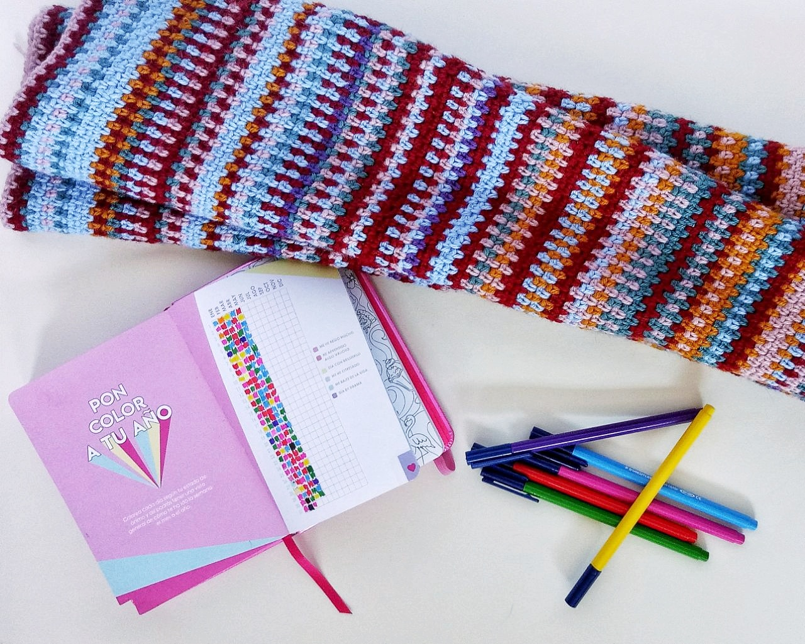

Feelings blanket
 Hoy os vamos a contar todo sobre nuestras feelings blankets, nuestras mantas de sentimientos. Todo empezó las Navidades pasadas, cuando estábamos pasando las vacaciones en Valencia con bastante tiempo libre y Raquel en un enésimo intento por mejorar su organización se compró la agenda anual de la vecina rubia y así empezar el 2020 con buen pie. Nos sorprendió lo chula que era esta agenda y los detalles que tenía por dentro. En concreto, nos llamó mucho la atención una cuadrícula que hacía de calendario de sentimientos. Cada día tenías que elegir un color para determinar cómo te habías sentido entre las siguientes opciones: ‘día brilli-brilli’, ‘me he reído mucho’, ‘he aprendido algo valioso’, ‘me bajo de la vida’, ‘me he estresado mucho’, ‘día drama’.
Fue entonces cuando Raquel se acordó de un concepto, que Isa no conocía, llamado ‘temperature blanket’, básicamente consiste en mapear un rango de temperaturas a colores, y tejer cada día durante un año una línea con el color correspondiente a la temperatura que haya hecho ese día. El resultado es una manta con un rango de colores que transiciona de colores fríos a cálidos y viceversa según la época del año, os invitamos a que hagáis una rápida búsqueda en google para conocer cómo queda y las diferentes maneras en las que las tejedoras llevan a cabo esta idea. Entonces pensamos, ¿por qué no hacemos esto a modo de diario de sentimientos en lugar de diario de temperaturas?. De esta manera íbamos a tener que elegir cada día durante un año, un sentimiento de los de la agenda para traspasarlo a uno de los 6 colores que elegimos para crear nuestras mantas. Raquel en ganchillo, Isa en punto. La bautizamos como ‘feelings blanket’, una manta mucho más personal y única que la de temperatura, aunque a veces cuando vives un día ‘normal’ cuesta decidirse por un sentimiento, nos parece un ejercicio de introspección interesante. Además, el año 2020 está resultando ser un año atípico y todo esto queda grabado en nuestra mantita.
Ya llevamos casi medio año, y hay días que se hace un poco difícil llevar la manta al día al tiempo que trabajamos en otros proyectos, pero creemos que el resultado al final del año merecerá la pena.
A continuación, te dejamos los puntos y las técnicas utilizadas en ambas mantas, por si te animas a tejerla y quieres utilizar nuestras mantas como referencia.
Hilo utilizado en ambas mantas: lana merino molón 35 de Rosas Crafts.
Colores:
186 - Día con brilli brilli
469 - Me he reído mucho
27 - He aprendido algo valioso
20 - Me bajo de la vida
106 - Me he estresado mucho
111 - Día drama
Mantita ganchillo:
Número de puntos a lo ancho: 236
Cada día:
1ª línea: pto bajo, (pto bajo, cadeneta, te saltas un pto) repites hasta último pto, pto bajo
2ª línea: 2 ptos bajos, (pto bajo en la cadeneta anterior, cadeneta, te saltas pto) repites hasta último pto, pto bajo
Mantita punto:
Número de puntos a lo ancho: 273
Se realiza a punto bobo, esto es, cada día:
1ª línea: punto derecho
2ª línea: punto derecho